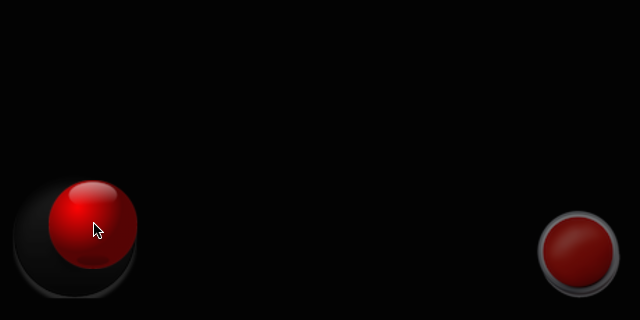
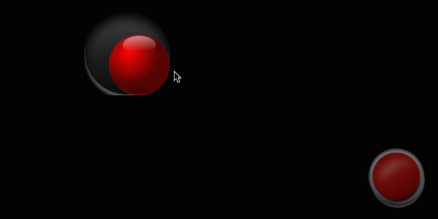

Controles del videojuego¶
La principal forma de control del móvil es la pantalla táctil, por lo que los videojuegos diseñados específicamente para móviles normalmente se adaptan a esta forma de entrada. Encontramos también algunos juegos diseñados para ser manejados mediante el acelerómetro. Sin embargo, cuando se quiere trasladar a móvil un juego diseñado originalmente para otro sistema en el que contamos con teclado, ratón o joystick deberemos adaptar su forma de manejo, ya que en la mayoría de casos no contamos con dichos mecanismos de entrada en móviles.
Vamos a ver los diferentes mecanismos de entrada que podemos utilizar en los videojuegos para móviles, y una serie de buenas prácticas a la hora de implementar el control de estos videojuegos.
Teclado en Cocos2d-x¶
Cocos2d-x soporta eventos de teclado, pero éstos no funcionan en plataformas móviles. Aunque nuestro proyecto esté orientado exclusivamente a estas plataformas, si el control de nuestro juego se realiza mediante mando es recomendable que implementemos también la posibilidad de controlarlo mediante teclado. Esto será de gran utilidad durante el desarrollo, ya que no existe forma de emular un mando, y la forma más parecida al mando para manejar nuestro juego en las pruebas que hagamos durante el desarrollo es el control mediante teclado.
Para leer los eventos de teclado desde Cocos2d-x podemos utilizar la clase EventListenerKeyboard como se muestra a continuación:
1 2 3 4 5 6 7 8 9 10 11 12 13 14 15 16 17 18 19 20 21 22 23 24 25 26 27 | bool MiEscena::init() { if ( !Layer::init() ) { return false; } configuraTeclado(); return true; } void MiEscena::configurarTeclado() { _listener = EventListenerKeyboard::create(); // Registramos callbacks _listener->onKeyPressed = CC_CALLBACK_2(MiEscena::onConnectController,this); _listener->onReleased = CC_CALLBACK_2(MiEscena::onDisconnectedController,this); // Añadimos el listener el mando al gestor de eventos _eventDispatcher->addEventListenerWithSceneGraphPriority(_listener, this); } void MiEscena::onKeyDown(EventKeyboard::KeyCode code, Event *event) { } void MiEscena::onKeyUp(EventKeyboard::KeyCode code, Event *event) { } |
Por ejemplo, para reconocer los controles izquierda-derecha mediante las teclas A-D podríamos escribir los métodos onKeyDown y onKeyUp como se muestra a continuación:
1 2 3 4 5 6 7 8 9 10 11 12 13 14 15 16 17 18 19 20 21 | void MiEscena::onKeyDown(EventKeyboard::KeyCode code, Event *event) { switch(keyCode){ case EventKeyboard::KeyCode::KEY_A: _izquierdaPulsado = true; break; case EventKeyboard::KeyCode::KEY_D: _derechaPulsado = true; break; } } void MiEscena::onKeyUp(EventKeyboard::KeyCode code, Event *event) { switch(keyCode){ case EventKeyboard::KeyCode::KEY_A: _izquierdaPulsado = false; break; case EventKeyboard::KeyCode::KEY_D: _derechaPulsado = false; break; } } |
Pantalla táctil¶
Como hemos comentado, es el mecanismo más habitual de entrada en los videojuegos para móviles. En muchos tipos de videojuegos esta es la forma de control más natural. Por ejemplo, tenemos puzzles en los que tenemos que interactuar con diferentes elementos del escenario tocando sobre ellos. También en el género tower defense resulta natural posicionar nuestras diferentes unidades tocando sobre la pantalla, o de forma más amplia en el género de la estrategia interactuar con nuestros recursos y unidades pulsando sobre ellos.
La pantalla táctil tiene ciertas similitudes con el control mediante ratón, pudiendo trasladar muchos juegos que originalmente se controlaban mediante ratón a dispositivos táctiles. Sin embargo, debemos tener en cuenta algunas diferencias importantes. Los juegos en los que el ratón se utiliza para el control de la cámara y para apuntar deslizándolo (como es el caso fundamentalmente de los First Person Shooters), encontraremos una pérdida al pasarlos a la pantalla táctil, y no será trivial implementarlo de forma correcta. Sin embargo, aquellos en los que se utilice para seleccionar elementos mediante el puntero ganarán con la pantalla táctil, ya que será más rápido pulsar sobre estos elementos con el dedo que tener que deslizar el puntero del ratón. Además, tenemos que tener en cuenta una ventaja muy importante de la pantalla táctil sobre el ratón: es multitáctil. Esto quiere decir que podemos tener al mismo tiempo varios contactos en pantalla, cosa que con el ratón no es posible. Esto nos da un gran abanico de posibilidades a la hora de implementar el control en nuestros videojuegos.
Pantalla táctil en Cocos2d-x¶
Vamos a ver la forma de implementar este mecanismo de control en Cocos2d-x. Para la detección de eventos de la pantalla táctil crearemos un listener de tipo EventListenerTouch:
Encontramos dos variantes:
EventListenerTouchOneByOne: Procesa los eventos de la pantalla táctil de uno en uno. Cada vez que se reciba un evento será sobre un único contacto (Touch). Es más sencillo de implementar, y resultará adecuado para aquellos juegos en los que no necesitemos detectar más de un contacto al mismo tiempo.EventListenerTouchAllAtOnce: En este caso podremos recibir en cada evento información de varios contactos (recibiremos una lista de objetosTouch). Será más complicado de gestionar, pero nos permitirá implementar juegos que hagan uso de la pantalla multitáctil.
Una vez seleccionado el listener que más nos interese para nuestro videojuego, lo inicializaremos de la siguiente forma:
1 | auto listener = EventListenerTouchOneByOne::create(); |
Eventos de la pantalla táctil en Cocos2d-x¶
Hablaremos de un gesto táctil para referirnos a la secuencia que consiste en tocar sobre la pantalla, deslizar el dedo, y levantarlo de la pantalla. Durante el gesto se producirán tres tipos de eventos:
onTouchBegan: Evento de comienzo de un gesto. En este evento podemos decidir si queremos procesar el resto del gesto o no. En caso de no estar interesados en este gesto ya no recibiremos ningún evento más del mismo (ni de movimiento ni de finalización).onTouchMoved: Evento de continuación del gesto. Mientras desplacemos el contacto por la pantalla recibiremos eventos de movimiento con sus nuevas coordenadas.onTouchEnded: Evento de finalización del gesto. Al levantar el dedo de la pantalla el gesto finalizará.
Podemos indicar callbacks para estos eventos mediante funciones lambda, o utilizandos la macro CC_CALLBACK_2.
Comenzamos con el evento de comienzo del gesto. La función callback deberá devolver un booleano indicando si estamos interesados en el gesto o no. Por ejemplo, podemos considerar que nos interesa el gesto si hemos pulsado sobre un determinado sprite, y que no nos interesa en caso contrario.
1 2 3 4 5 6 7 | listener->onTouchBegan = [=](Touch* touch, Event* event){ if(estaSobreSprite(touch)) { return true; } else { return false; } }; |
De forma similar definiremos los eventos de movimiento y finalización, aunque en estos casos no deberemos devolver ningún valor:
1 2 3 4 5 6 7 | listener->onTouchMoved = [=](Touch* touch, Event* event){ ... }; listener->onTouchEnded = [=](Touch* touch, Event* event){ ... }; |
Prioridad de los eventos¶
Una vez definidos los eventos, añadimos el listener a la escena:
1 | m_node->getEventDispatcher()->addEventListenerWithSceneGraphPriority(listener, m_sprite); |
En este caso m_node sería el nodo principal que contiene nuestra escena, y m_sprite el nodo que queremos que actúe como objetivo (target) de nuestro listener.
Podemos añadir el listener con dos sistemas de prioridad distintos:
- Prioridad de grafo de la escena: La prioridad en la que se ejecutan los diferentes listeners viene determinada por el orden de los nodos en el grafo de la escena. El nodo que pasamos como target al añadir el listener será el que determine dicha prioridad. Se ejecutarán antes los eventos definidos sobre nodos que queden delante de otros en la pantalla (es decir, primero aquellos que tengan mayor Z).
- Prioridad fija: En este caso la prioridad se especifica mediante un valor fijo al añadir el listener.
Consumo de eventos¶
Al crear un listener podemos indicar que consuma los eventos:
1 | listener->setSwallowTouches(true); |
Si hacemos esto, en caso de que nuestro listener devuelva true en onTouchBegan consumirá el evento y éste no pasará a otros listeners de menor prioridad. En caso contrario, el evento se propagará al siguiente listener
Nodo objetivo del listener¶
Hemos visto que al utilizar prioridad basada en el grafo de la escena cada listener tiene un nodo objetivo. Podemos aprovechar esto para utilizar dicho nodo como nodo sobre el que estamos interesados en pulsar:
1 2 3 4 5 6 7 8 9 10 11 12 13 14 | listener->onTouchBegan = [=](Touch* touch, Event* event) { auto target = static_cast<Sprite*>(event->getCurrentTarget()); Point locationInNode = target->convertToNodeSpace(touch->getLocation()); Size s = target->getContentSize(); Rect rect = Rect(0, 0, s.width, s.height); if(rect.containsPoint(locationInNode)) { return true; } else { return false; } }; |
Con Event::getCurrentTarget podemos obtener el nodo que actúa de target. Podemos convertir las coordenadas globales del touch a coordenadas locales del nodo target, y en caso de estar dentro del área que ocupa dicho nodo entonces devolvemos true para seguir procesando eventos de este gesto. De esta forma podemos hacer por ejemplo que al pulsar sobre nuestro sprite podamos arrastrarlo por la pantalla, mientras que si pulsamos fuera este listener no hará nada.
Pantalla multitáctil¶
Cocos2d-x soporta pantalla multitáctil, pero por defecto se encuentra deshabilitada en iOS. Para habilitar el soporte para recibir varios contactos simultáneos en esta plataforma, deberemos abrir el fichero AppController.mm y localizar la siguiente línea:
1 | [eaglView setMultipleTouchEnabled:NO]; |
La modificaremos de forma que si que esté habilitado el soporte para múltiples contactos:
1 | [eaglView setMultipleTouchEnabled:YES]; |
En Android no será necesario que hagamos nada, el soporte para pantalla multitáctil está habilitado por defecto.
Acelerómetro¶
Encontramos también algunos juegos en los que el mecanismo de control más natural es el uso del acelerómetro. Por ejemplo juegos que cambian la gravedad en la escena según la inclinación del móvil, como es el caso de los juegos en los que manejamos una bola a través de un laberinto, o juegos de conducción en los que la inclinación del móvil hace de volante.
En Cocos2d-x implementaremos soporte para el acelerómetro mediante un listener de tipo EventListenerAcceleration. Para que este listener funcione, en primer lugar deberemos activar el uso del acelerómetro:
1 | Device::setAccelerometerEnabled(true); |
Una vez hecho esto, creamos el listener especificando directamente un callback mediante una función lambda:
1 2 3 | auto listener = EventListenerAcceleration::create([=](Acceleration* acc, Event* event) { ... } |
También podemos utilizar la macro CC_CALLBACK_2:
1 | auto listener = EventListenerAcceleration::create(CC_CALLBACK_2(Game::onAcceleration, this)); |
1 2 3 4 | void Game::onAcceleration(Acceleration* acc, Event* event) { ... } |
Por último, añadiremos el listener al gestor de eventos de la escena:
1 | m_node->getEventDispatcher()->addEventListenerWithSceneGraphPriority(listener, m_node); |
Es importante tener en cuenta que en los juegos que se manejen mediante acelerómetro, al no ser necesario tocar la pantalla, no debemos permitir que esta se apague de forma automática por inactividad. Esto no se puede hacer directamente con Cocos2d-x, sino que tendremos que especificarlo de forma nativa para cada plataforma.
Mandos¶
Los juegos diseñados para videoconsolas o máquinas recreativas se manejan normalmente mediante joystick o pad. Al portar uno de estos juegos a móvil podemos optar por:
- Adaptar el control de videojuego a pantalla táctil. Esto implica grandes cambios en el diseño del juego y en el gameplay y no siempre es posible hacerlo.
- Añadir un pad virtual en pantalla. Permite mantener el mismo mecanismo de control que el juego original, pero resulta más complicado de manejar que con un mando real.
- Añadir soporte para mandos físicos. Nos permitirá trasladar la misma experiencia de juego que la versión de videoconsola/recreativa pero necesita que el usuario cuente con este dispositivo. Se pierde una de las ventajas de los juegos móviles, que es el llevarlos siempre con nosotros.
Vamos ahora a centrarnos en este tipo de juegos y en la forma de diseñar un control adecuado para ellos. Veremos tanto la forma de incorporar un pad virtual como la forma de añadir soporte para diferentes tipos de mandos físicos. Dentro de estos mandos encontramos tanto mandos soportados por las APIs oficiales de iOS y Android, como mandos con APIs de terceros, como por ejemplo iCade.
Buenas prácticas para juegos basados en control pad¶
Si queremos implementar un juego cuyo manejo esté basado en control pad, será recomendable seguir las siguientes prácticas:
- Permitir el manejo del juego mediante pad virtual en pantalla si no se dispone de mando real.
- Añadir compatibilidad con mandos reales. Se recomienda añadir soporte para las APIs oficiales y para aquellos mandos más utilizados, como iCade.
- En caso de tener conectado un mando real, ocultar el pad virtual para que no moleste en pantalla.
- Respetaremos la función estándar de cada botón. El botón de pausa del mando debe permitir pausar el juego en cualquier momento. Determinados botones se suelen utilizar para realizar las mismas acciones en todos los juegos (saltos, ataque, acción, etc). Deberemos intentar seguir estas convenciones.
- La pantalla del móvil no debe apagarse mientras utilizamos el juego con el mando externo.
Mandos virtuales¶
Cuando la mecanica de nuestro juego exige que se controles mediante un mando tradicional, y no contamos con ningún mando hardware que podamos utilizar, la única solución será introducir en nuestro juego un mando virtual en pantalla.
Vamos a ver diferentes tipos de mandos que podemos implementar en pantalla, emulando controles tanto digitales como analógicos.
Controles virtuales¶
Antes de implementar un mecanismo de control concreto, es conveniente generar una estructura de clases que haga de fachada y nos permita implementar el control del videojuego de forma genérica, sin hacer referencia expresa al teclado, mandos físicos, o mandos virtuales.
En esta sección proponemos un sistema de control virtual basado en herencia. Implementaremos una clase VirtualControls que nos dará la información necesaria para leer los controles que necesite nuestro videojuego. Por ejemplo, si necesitamos un joystick analógico con dos ejes (horizontal y vertical) y tres botones digitales, nuestra clase nos dará información sobre estos controles virtuales, sin determinar qué mecanismo concreto se utiliza para implementarlos. Esto será responsabilidad de las subclases de VirtualControls, que serán las que implementen el mapeo entre un mecanismo de control concreto y los controles virtuales definidos en VirtualControls. De esta forma, simplemente cambiando la subclase de VirtualControls que instanciamos podremos cambiar la forma de controlar el videojuego.
Vamos a ver un ejemplo de implementación de sistema genérico de control. En primer lugar definiremos los botones y ejes virtuales que necesitamos reconocer en el videojuego:
1 2 3 4 5 6 7 8 9 10 11 12 13 | #define kNUM_BUTTONS 3 #define kNUM_AXIS 2 enum Button { BUTTON_ACTION=0, BUTTON_LEFT=1, BUTTON_RIGHT=2 }; enum Axis { AXIS_HORIZONTAL=0, AXIS_VERTICAL=1 }; |
En este caso hemos definido tres botones (acción, izquierda y derecha), y dos ejes (horizontal y vertical), aunque podríamos adaptar esto a las necesidades de cada juego. Indicamos mediante constantes el número de botones y ejes, e identificamos cada uno mediante elementos mediante enumeraciones.
Los botones tendrán como estado un booleano (pulsado o no pulsado), mientras que los ejes tendrán como valor un valor de tipo float entre -1 y 1 (palanca totalmente inclinada en un sentido o en el contrario), y valdrá 0 si está en reposo.
Mostramos a continuación la estructura completa que podría tener la clase que implemente el control virtual:
1 2 3 4 5 6 7 8 9 10 11 12 13 14 15 16 17 18 19 20 21 22 23 24 25 26 27 | class VirtualControls: public Ref { public: bool init(); virtual void preloadResources(){}; virtual Node* getNode() {return NULL;}; bool isButtonPressed(Button button); float getAxis(Axis axis); std::function<void(Button)> onButtonPressed; std::function<void(Button)> onButtonReleased; // Keyboard controls void onKeyPressed(EventKeyboard::KeyCode keyCode, cocos2d::Event *event); void onKeyReleased(EventKeyboard::KeyCode keyCode, cocos2d::Event *event); void addKeyboardListeners(cocos2d::Node *node); CREATE_FUNC(VirtualControls); protected: bool buttonState[kNUM_BUTTONS]; float axisState[kNUM_AXIS]; }; |
Como vemos, la clase controla el estado de los botones (pulsados o sin pulsar) y el de los ejes, que oscilará entre -1 (totalmente a la izquierda) y 1 (totalmente a la derecha). Deberemos poder leer el estado de estos controles virtuales en cualquier momento. Para ello hemos incorporado las propiedades buttonState y axisState, en las que almacenamos este estado, y proporcionamos los métodos isButtonPressed y getAxis para consultarlos.
Definimos también los eventos onButtonPressed y onButtonReleased para los cuales podremos definir callbacks. De esta forma podremos tener constancia de que un botón ha sido pulsado o soltado, sin tener que comprobar continuamente su estado.
Además, incluimos la posibilidad de devolver un nodo (método getNode) que nos permita pintar controles virtuales en pantalla (de momento estará vacío), y también un método para cargar los recursos necesarios para pintar estos controles (preloadResources). Estos métodos se definirán en las subclases de VirtualControls.
Vamos a ver a continuación cómo implementar cada método de esta clase. En primer lugar, el método para su inicialización (init) simplemente establecerá el estado de los botones a "no pulsado" (false) y los ejes en reposo (0):
1 2 3 4 5 6 7 8 9 10 11 | bool VirtualControls::init(){ for(int i=0;i<kNUM_BUTTONS;i++) { buttonState[i] = false; } for(int i=0;i<kNUM_AXIS;i++) { axisState[i] = 0.0f; } return true; } |
También será necesario definir los métodos para poder leer el estado de los controles (botones y ejes):
1 2 3 4 5 6 7 | bool VirtualControls::isButtonPressed(Button button) { return buttonState[button]; } float VirtualControls::getAxis(Axis axis) { return clampf(axisState[axis], -1.0, 1.0); } |
De momento sólo hemos definido en esta clase los controles que se utilizarán en el juego y lo métodos para consultarlos, pero de momento no se ha establecido la forma de darles valor a estos controles. Esto es algo que deberá implementar cada subclase concreta. Sin embargo, para depuración puede ser conveniente poder activar al control por teclado.
Vamos a hacer que la clase base implemente controles de teclado para depuración. En primer lugar actualizamos la definición de la clase VirtualControls. Añadimos a ella los callbacks necesarios para recibir los controles de teclado, y un método para activar el control por teclado en nuestro juego (addKeyboardListeners):
1 2 3 4 5 6 7 8 9 10 11 12 | class VirtualControls: public Ref { public: ... // Keyboard controls void onKeyPressed(EventKeyboard::KeyCode keyCode, cocos2d::Event *event); void onKeyReleased(EventKeyboard::KeyCode keyCode, cocos2d::Event *event); void addKeyboardListeners(cocos2d::Node *node); ... }; |
A continuación, en la implementación de la clase introducimos el código de los callbacks de los eventos de teclado: las teclas Cursor Izquierda y Cursor Derecha modificarán el valor del eje horizontal (al mismo tiempo que el estado de los botones BUTTON_LEFT y BUTTON_RIGHT), y la tecla espacio modificará el estado del botón BUTTON_ACTION:
1 2 3 4 5 6 7 8 9 10 11 12 13 14 15 16 17 18 19 20 21 22 23 24 25 26 27 28 29 30 31 32 33 34 35 36 37 38 39 40 41 | void VirtualControls::onKeyPressed(EventKeyboard::KeyCode keyCode, cocos2d::Event *event){ if(onButtonPressed) { if (keyCode == EventKeyboard::KeyCode::KEY_LEFT_ARROW) { onButtonPressed(Button::BUTTON_LEFT); axisState[Axis::AXIS_HORIZONTAL] -= 1.0; } else if (keyCode == EventKeyboard::KeyCode::KEY_RIGHT_ARROW) { onButtonPressed(Button::BUTTON_RIGHT); axisState[Axis::AXIS_HORIZONTAL] += 1.0; } else if(keyCode==EventKeyboard::KeyCode::KEY_SPACE) { onButtonPressed(Button::BUTTON_ACTION); } } } void VirtualControls::onKeyReleased(EventKeyboard::KeyCode keyCode, cocos2d::Event *event){ if(onButtonReleased) { if (keyCode == EventKeyboard::KeyCode::KEY_LEFT_ARROW) { onButtonReleased(Button::BUTTON_LEFT); axisState[Axis::AXIS_HORIZONTAL] += 1.0; } else if (keyCode == EventKeyboard::KeyCode::KEY_RIGHT_ARROW) { onButtonReleased(Button::BUTTON_RIGHT); axisState[Axis::AXIS_HORIZONTAL] -= 1.0; } else if(keyCode==EventKeyboard::KeyCode::KEY_SPACE) { onButtonReleased(Button::BUTTON_ACTION); } } } |
De esta forma mapeamos la lectura del teclado sobre nuestro sistema de control virtual. Debemos añadir también un método que cree el listener necesario para escuchar los eventos de teclado, y programarlo para que avise a los callbacks definidos anteriormente. Esto lo podemos hacer de la siguiente forma:
1 2 3 4 5 6 7 8 9 10 11 | void VirtualControls::addKeyboardListeners(cocos2d::Node *node) { //Creo listeners del teclado auto listener = cocos2d::EventListenerKeyboard::create(); listener->onKeyPressed = CC_CALLBACK_2(VirtualControls::onKeyPressed,this); Director::getInstance()->getEventDispatcher() ->addEventListenerWithSceneGraphPriority(listener, node); listener = cocos2d::EventListenerKeyboard::create(); listener->onKeyReleased = CC_CALLBACK_2(VirtualControls::onKeyReleased,this); Director::getInstance()->getEventDispatcher() ->addEventListenerWithSceneGraphPriority(listener, node); |
Mostramos a continuación el código completo de la clase VirtualControls:
1 2 3 4 5 6 7 8 9 10 11 12 13 14 15 16 17 18 19 20 21 22 23 24 25 26 27 28 29 30 31 32 33 34 35 36 37 38 39 40 41 42 43 44 45 46 47 48 49 50 51 52 53 54 55 56 57 58 59 60 61 62 63 64 65 66 67 68 69 70 71 72 73 74 75 76 77 78 79 80 81 82 83 84 85 86 87 88 89 90 91 92 93 94 95 96 97 98 99 100 101 102 103 104 105 106 107 108 109 110 111 112 113 114 115 116 117 118 119 120 121 122 123 | // VirtualControls.h #define kNUM_BUTTONS 1 #define kNUM_AXIS 2 enum Button { BUTTON_ACTION=0, BUTTON_LEFT=1, BUTTON_RIGHT=2 }; enum Axis { AXIS_HORIZONTAL=0, AXIS_VERTICAL=1 }; class VirtualControls: public Ref { public: bool init(); virtual void preloadResources(){}; virtual Node* getNode(){return NULL;}; bool isButtonPressed(Button button); float getAxis(Axis axis); std::function<void(Button)> onButtonPressed; std::function<void(Button)> onButtonReleased; // Keyboard controls void onKeyPressed(EventKeyboard::KeyCode keyCode, cocos2d::Event *event); void onKeyReleased(EventKeyboard::KeyCode keyCode, cocos2d::Event *event); void addKeyboardListeners(cocos2d::Node *node); CREATE_FUNC(VirtualControls); protected: bool buttonState[kNUM_BUTTONS]; float axisState[kNUM_AXIS]; }; // VirtualControls.cpp bool VirtualControls::init(){ for(int i=0;i<kNUM_BUTTONS;i++) { buttonState[i] = false; } for(int i=0;i<kNUM_AXIS;i++) { axisState[i] = 0.0f; } return true; } bool VirtualControls::isButtonPressed(Button button) { return buttonState[button]; } float VirtualControls::getAxis(Axis axis) { return clampf(axisState[axis], -1.0, 1.0); } // Keyboard input support void VirtualControls::addKeyboardListeners(cocos2d::Node *node) { //Creo listeners del teclado auto listener = cocos2d::EventListenerKeyboard::create(); listener->onKeyPressed = CC_CALLBACK_2(VirtualControls::onKeyPressed,this); Director::getInstance()->getEventDispatcher() ->addEventListenerWithSceneGraphPriority(listener, node); listener = cocos2d::EventListenerKeyboard::create(); listener->onKeyReleased = CC_CALLBACK_2(VirtualControls::onKeyReleased,this); Director::getInstance()->getEventDispatcher() ->addEventListenerWithSceneGraphPriority(listener, node); } void VirtualControls::onKeyPressed(EventKeyboard::KeyCode keyCode, cocos2d::Event *event){ if(onButtonPressed) { if (keyCode == EventKeyboard::KeyCode::KEY_LEFT_ARROW) { onButtonPressed(Button::BUTTON_LEFT); axisState[Axis::AXIS_HORIZONTAL] -= 1.0; } else if (keyCode == EventKeyboard::KeyCode::KEY_RIGHT_ARROW) { onButtonPressed(Button::BUTTON_RIGHT); axisState[Axis::AXIS_HORIZONTAL] += 1.0; } else if(keyCode==EventKeyboard::KeyCode::KEY_SPACE) { onButtonPressed(Button::BUTTON_ACTION); } } } void VirtualControls::onKeyReleased(EventKeyboard::KeyCode keyCode, cocos2d::Event *event){ if(onButtonReleased) { if (keyCode == EventKeyboard::KeyCode::KEY_LEFT_ARROW) { onButtonReleased(Button::BUTTON_LEFT); axisState[Axis::AXIS_HORIZONTAL] += 1.0; } else if (keyCode == EventKeyboard::KeyCode::KEY_RIGHT_ARROW) { onButtonReleased(Button::BUTTON_RIGHT); axisState[Axis::AXIS_HORIZONTAL] -= 1.0; } else if(keyCode==EventKeyboard::KeyCode::KEY_SPACE) { onButtonReleased(Button::BUTTON_ACTION); } } } |
A continuación veremos cómo crear subclases de VirtualControls que nos permitan implementar formar alternativas de control, con un mando dibujado sobre pantalla. Además de incorporar un mando virtual en pantalla, podremos aprovechar esta estructura de clases para implementar otros mecanismos de control alternativos como acelerómetro o mandos físicos.
Pad virtual¶
El pad virtual consiste en dibujar la cruceta de control digital sobre la pantalla y mediante los eventos de la pantalla táctil detectar cuándo se pulsa sobre él. Esta es la forma más sencilla de implementar un control virtual, y será suficiente en el caso de juegos que sólo requieran controles digitales.
Aprovecharemos la clase VirtualControls introducida en el apartado anterior, y crearemos una subclase que lea la entrada a partir de un pad virtual en pantalla, y mapee dicha entrada sobre los eventos de control virtuales genéricos definidos en la VirtualControls (ejes horizontal y vertical y estado de los botones).
1 2 3 4 5 6 7 8 9 10 11 12 13 | class VirtualPad: public VirtualControls { public: bool init(); void preloadResources(); Node* getNode(); CREATE_FUNC(VirtualPad); private: ... }; |
Crearemos los diferentes botones del pad virtual como sprites, los posicionaremos en pantalla, y programaremos los eventos necesarios para detectar cuándo pulsamos sobre ellos. Vamos a ver un ejemplo sencillo con tres botones, un pad direccional con botones para movernos a la izquierda y derecha, y un botón de acción:
1 2 3 4 5 | private: cocos2d::Sprite *m_buttonAction; cocos2d::Sprite *m_buttonLeft; cocos2d::Sprite *m_buttonRight; ... |
Además, añadimos un listener para leer los eventos de la pantalla táctil que se produzcan sobre los controles anteriores:
1 2 3 | private: ... cocos2d::EventListenerTouchOneByOne *m_listener; |
Vamos a pasar ahora a ver la implementación de la clase VirtualPad. En primer lugar, podemos proporcionar un método para cargar los recursos necesarios para dibujar el mando en pantalla. Podemos cargarlos desde un sprite sheet:
1 2 3 4 5 6 7 8 9 10 | void VirtualPad::preloadResources(){ //Cache de sprites auto spriteFrameCache = SpriteFrameCache::getInstance(); //Si no estaba el spritesheet en la caché lo cargo if(!spriteFrameCache->getSpriteFrameByName("boton-direccion.png")) { spriteFrameCache->addSpriteFramesWithFile("mando.plist"); } } |
A continuación vamos a ver cómo crear la interfaz del pad virtual en pantalla, posicionando de forma correcta los gráficos que hemos cargado y añadiendo los correspondiente listeners de pantalla táctil sobre ellos. Algo que debemos tener en cuenta al posicionar los controles es que éstos siempre deben quedar en la parte visible de la pantalla. Por ejemplo, al inicializar nuestro pad virtual podemos posicionar los botones de la siguiente forma:
1 2 3 4 5 6 7 8 9 10 11 12 13 14 15 16 17 18 19 20 21 22 23 24 | Size visibleSize = Director::getInstance()->getVisibleSize(); Vec2 visibleOrigin = Director::getInstance()->getVisibleOrigin(); m_buttonLeft = Sprite::createWithSpriteFrameName("boton-direccion.png"); m_buttonLeft->setAnchorPoint(Vec2(0,0)); m_buttonLeft->setPosition(visibleOrigin.x+kPAD_MARGIN, visibleOrigin.y+kPAD_MARGIN); m_buttonLeft->setOpacity(127); m_buttonLeft->setTag(Button::BUTTON_LEFT); m_buttonRight = Sprite::createWithSpriteFrameName("boton-direccion.png"); m_buttonRight->setAnchorPoint(Vec2(1,0)); m_buttonRight->setScaleX(-1); m_buttonRight->setOpacity(127); m_buttonRight->setPosition(visibleOrigin.x+ kPAD_MARGIN + m_buttonLeft->getContentSize().width + kPAD_MARGIN, visibleOrigin.y+kPAD_MARGIN); m_buttonRight->setTag(Button::BUTTON_RIGHT); m_buttonAction = Sprite::createWithSpriteFrameName("boton-accion.png"); m_buttonAction->setAnchorPoint(Vec2(1,0)); m_buttonAction->setPosition(visibleOrigin.x + visibleSize.width - kPAD_MARGIN, visibleOrigin.y+kPAD_MARGIN); m_buttonAction->setOpacity(127); m_buttonAction->setTag(Button::BUTTON_ACTION); |
En este ejemplo vemos además que hacemos los botones semitransparentes. Esta es una práctica habitual, que hará que los botones virtuales afecten menos al apartado visual de nuestro videojuego.

También podemos observar que hemos aprovechado la propiedad tag de los botones para identificarlos mediante los elementos de la enumeración Button. Veremos que esto será de especial interés cuando procesemos los eventos, para saber a qué botón virtual corresponde cada botón en pantalla.
Una vez hemos creado los sprites de los botones los añadiremos a la pantalla:
1 2 3 4 5 | m_node= Node::create(); m_node->addChild(m_buttonLeft,0); m_node->addChild(m_buttonRight,0); m_node->addChild(m_buttonAction,0); m_node->setLocalZOrder(100); |
Tras esto, debemos definir un listener de eventos táctiles para detectar cuándo pulsamos sobre ellos:
1 2 | m_listener = EventListenerTouchOneByOne::create(); m_listener->setSwallowTouches(true); |
Aprovecharemos las funciones onButttonPressed y onButtonReleased definidas en la superclase VirtualControls para avisar al callback que tuviesen asignado (si hubiese alguno) de que un botón ha sido pulsado o liberado, y actualizaremos también el estado de los botones (buttonState).
Empezamos detectando cuando comienza un contacto en pantalla. Si se ha pulsado sobre unos de los botones, lo marcaremos como pulsado y llamamos a los callbacks correspondientes (si no son NULL):
1 2 3 4 5 6 7 8 9 10 11 12 13 14 15 16 17 18 19 20 21 | m_listener->onTouchBegan = [=](Touch* touch, Event* event) { auto target = static_cast<Sprite*>(event->getCurrentTarget()); Point locationInNode = target->convertToNodeSpace(touch->getLocation()); Size s = target->getContentSize(); Rect rect = Rect(0, 0, s.width, s.height); if(rect.containsPoint(locationInNode)) { buttonState[target->getTag()] = true; // Solo llama al callback si no es NULL if(onButtonPressed) { onButtonPressed((PadButton)target->getTag()); } target->setOpacity(255); return true; } return false; }; |
En este caso target se refiere al botón sobre el que se ha definido el listener. Comprobamos si hemos pulsado sobre el área del botón (target) y en tal caso anotamos que dicho botón está pulsado y avisamos al callback correspondiente, en caso de que se haya asignado uno.
De forma similar podemos programar el evento de finalización del contacto, y en ese caso marcamos el botón como no pulsado y llamamos al callback correspondiente:
1 2 3 4 5 6 7 8 9 10 | m_listener->onTouchEnded = [=](Touch* touch, Event* event) { auto target = static_cast<Sprite*>(event->getCurrentTarget()); target->setOpacity(127); buttonState[target->getTag()] = false; // Solo llama al callback si no es NULL if(onButtonReleased) { onButtonReleased((PadButton)target->getTag()); } }; |
Obtenemos el botón (target) sobre el que se ha definido el listener y anotamos que el botón ya no está pulsado, además de llamar al callback correspondiente en caso de estar asignado.
Por último, añadiremos el listener sobre cada uno de los botones. Podemos observar que hay una instancia del listener para cada botón, con lo que en cada uno de ellos el target será un único botón concreto:
1 2 3 | m_node->getEventDispatcher()->addEventListenerWithSceneGraphPriority(m_listener, m_buttonLeft); m_node->getEventDispatcher()->addEventListenerWithSceneGraphPriority(m_listener->clone(), m_buttonRight); m_node->getEventDispatcher()->addEventListenerWithSceneGraphPriority(m_listener->clone(), m_buttonAction); |
Mostramos a continuación el código completo de esta implementación sencilla de un pad virtual:
1 2 3 4 5 6 7 8 9 10 11 12 13 14 15 16 17 18 19 20 21 22 23 24 25 26 27 28 29 30 31 32 33 34 35 36 37 38 39 40 41 42 43 44 45 46 47 48 49 50 51 52 53 54 55 56 57 58 59 60 61 62 63 64 65 66 67 68 69 70 71 72 73 74 75 76 77 78 79 80 81 82 83 84 85 86 87 88 89 90 91 92 93 94 95 96 97 98 99 100 101 102 103 104 105 106 107 108 109 110 111 112 113 114 115 116 117 118 119 120 | // VirtualPad.h #define kPAD_MARGIN 20 class VirtualPad: public VirtualControls { public: bool init(); void preloadResources(); Node* getNode(); CREATE_FUNC(VirtualPad); private: cocos2d::Sprite *m_buttonAction; cocos2d::Sprite *m_buttonLeft; cocos2d::Sprite *m_buttonRight; cocos2d::EventListenerTouchOneByOne *m_listener; }; // VirtualPad.cpp bool VirtualPad::init(){ VirtualControls::init(); return true; } void VirtualPad::preloadResources(){ //Cache de sprites auto spriteFrameCache = SpriteFrameCache::getInstance(); //Si no estaba el spritesheet en la caché lo cargo if(!spriteFrameCache->getSpriteFrameByName("boton-direccion.png")) { spriteFrameCache->addSpriteFramesWithFile("mando.plist"); } } Node* VirtualPad::getNode(){ if(m_node==NULL) { Size visibleSize = Director::getInstance()->getVisibleSize(); Vec2 visibleOrigin = Director::getInstance()->getVisibleOrigin(); m_buttonLeft = Sprite::createWithSpriteFrameName("boton-direccion.png"); m_buttonLeft->setAnchorPoint(Vec2(0,0)); m_buttonLeft->setPosition(visibleOrigin.x+kPAD_MARGIN, visibleOrigin.y+kPAD_MARGIN); m_buttonLeft->setOpacity(127); m_buttonLeft->setTag(Button::BUTTON_LEFT); m_buttonRight = Sprite::createWithSpriteFrameName("boton-direccion.png"); m_buttonRight->setAnchorPoint(Vec2(1,0)); m_buttonRight->setScaleX(-1); m_buttonRight->setOpacity(127); m_buttonRight->setPosition(visibleOrigin.x+ kPAD_MARGIN + m_buttonLeft->getContentSize().width + kPAD_MARGIN, visibleOrigin.y+kPAD_MARGIN); m_buttonRight->setTag(Button::BUTTON_RIGHT); m_buttonAction = Sprite::createWithSpriteFrameName("boton-accion.png"); m_buttonAction->setAnchorPoint(Vec2(1,0)); m_buttonAction->setPosition(visibleOrigin.x + visibleSize.width - kPAD_MARGIN, visibleOrigin.y+kPAD_MARGIN); m_buttonAction->setOpacity(127); m_buttonAction->setTag(Button::BUTTON_ACTION); m_node= Node::create(); m_node->addChild(m_buttonLeft,0); m_node->addChild(m_buttonRight,0); m_node->addChild(m_buttonAction,0); m_node->setLocalZOrder(100); m_listener = EventListenerTouchOneByOne::create(); m_listener->setSwallowTouches(true); m_listener->onTouchBegan = [=](Touch* touch, Event* event) { auto target = static_cast<Sprite*>(event->getCurrentTarget()); Point locationInNode = target->convertToNodeSpace(touch->getLocation()); Size s = target->getContentSize(); Rect rect = Rect(0, 0, s.width, s.height); if(rect.containsPoint(locationInNode)) { buttonState[target->getTag()] = true; if(onButtonPressed) { onButtonPressed((Button)target->getTag()); } target->setOpacity(255); return true; } return false; }; m_listener->onTouchEnded = [=](Touch* touch, Event* event) { auto target = static_cast<Sprite*>(event->getCurrentTarget()); target->setOpacity(127); buttonState[target->getTag()] = false; if(onButtonReleased) { onButtonReleased((Button)target->getTag()); } }; m_node->getEventDispatcher()->addEventListenerWithSceneGraphPriority( m_listener, m_buttonLeft); m_node->getEventDispatcher()->addEventListenerWithSceneGraphPriority( m_listener->clone(), m_buttonRight); m_node->getEventDispatcher()->addEventListenerWithSceneGraphPriority( m_listener->clone(), m_buttonAction); } return m_node; } |
Stick virtual¶
El stick virtual emula el stick analógico de un mando. Podremos pulsar sobre él y arrastrar para así graduar cuánto queremos moverlo en una determinada dirección. En el caso del pad por ejemplo la dirección izquierda puede estar pulsada o no estarlo. En el stick podemos moverlo más o menos a la izquierda. Podremos leer el estado del stick analógico a partir del valor de sus ejes vertical y horizontal, que tomarán valores reales entre -1 y 1.
Para crear el aspecto visual de nuestro stick analógico utilizaremos dos sprites, uno para la base, que no se moverá nunca, y otro para la "palanca", que se desplazará conforme la arrastremos:
1 2 3 | private: cocos2d::Sprite *m_stickLeft; cocos2d::Sprite *m_stickLeftBase; |
Además, para facilitar la gestión del stick almacenaremos su posición central y el radio en el que puede moverse:
1 2 3 4 5 | private: ... cocos2d::Size m_radioStick; cocos2d::Point m_centerStick; |
Una vez definidas estas propiedades de la clase de nuestro stick vamos a pasar a implementar el código. Inicializaremos los sprites que componen el stick de la siguiente forma:
1 2 3 4 5 6 7 8 9 10 11 12 13 14 15 | Size visibleSize = Director::getInstance()->getVisibleSize(); Vec2 visibleOrigin = Director::getInstance()->getVisibleOrigin(); m_stickLeftBase = Sprite::createWithSpriteFrameName("base-stick.png"); m_stickLeftBase->setAnchorPoint(Vec2(0,0)); m_stickLeftBase->setPosition(visibleOrigin.x+kSTICK_MARGIN, visibleOrigin.y+kSTICK_MARGIN); m_stickLeftBase->setOpacity(127); m_stickLeft = Sprite::createWithSpriteFrameName("bola-stick.png"); m_stickLeft->setAnchorPoint(Vec2(0.5,0.5)); m_stickLeft->setOpacity(127); m_radioStick = m_stickLeftBase->getContentSize() * 0.5 - m_stickLeft->getContentSize() * 0.5; m_centerStick = m_stickLeftBase->getPosition() + m_stickLeftBase->getContentSize() * 0.5; m_stickLeft->setPosition(m_centerStick); |
Como podemos ver, posicionamos en primer lugar la base del stick en la esquina inferior-izquierda de la pantalla, haciéndola semiopaca. Tras esto, creamos la palanca y la posicionamos justo en el centro de la base. Definimos m_centerStick como la posición central de la base de la palanca, y m_radioStick como el radio en el que la palanca podrá moverse. Este radio se obtiene a partir de la media anchura y altura de la base, restándole la media anchura y altura de la palanca, para que así esta última quede siempre dentro de la base al desplazarla.

Una vez creado y configurado el stick, lo añadimos a la pantalla:
1 2 3 4 | m_node= Node::create(); m_node->addChild(m_stickLeftBase,0); m_node->addChild(m_stickLeft,1); m_node->setLocalZOrder(100); |
A continuación, definiremos un listener de eventos táctiles para controlar el stick:
1 2 | EventListenerTouchOneByOne* listener = EventListenerTouchOneByOne::create(); listener->setSwallowTouches(true); |
En el evento del comienzo del contacto comprobaremos si estamos tocando dentro de la palanca, y en tal caso devolveremos true para seguir procesando el gesto. En caso contrario, devolvemos false para ignorar los siguientes eventos de movimiento de dicho contacto.
1 2 3 4 5 6 7 8 9 10 11 12 13 14 15 | listener->onTouchBegan = [=](Touch* touch, Event* event) { auto target = static_cast<Sprite*>(event->getCurrentTarget()); Point locationInNode = target->convertToNodeSpace(touch->getLocation()); Size s = target->getContentSize(); Rect rect = Rect(0, 0, s.width, s.height); if(rect.containsPoint(locationInNode)) { target->setOpacity(255); return true; } return false; }; |
El evento más importante será el de movimiento del contacto:
1 2 3 4 5 6 7 8 9 10 11 12 13 | listener->onTouchMoved = [=](Touch* touch, Event* event) { auto target = static_cast<Sprite*>(event->getCurrentTarget()); Point offset = touch->getLocation()-touch->getStartLocation(); Point max(m_radioStick); Point min(Point::ZERO-m_radioStick); offset.clamp(min, max); axisState[Axis::AXIS_VERTICAL] = offset.y / max.y; axisState[Axis::AXIS_HORIZONTAL] = offset.x / max.x; target->setPosition(m_centerStick + offset); }; |
En este caso calculamos el desplazamiento (offset) de la posición a la que hemos movido el dedo respecto a la posición del contacto que inició el gesto (getStartLocation()). En función de dicho desplazamiento calculamos el valor de cada uno de los ejes, no permitiendo que se salga nunca del radio permitido (esto lo hacemos con la función clamp, para hacer que offset nunca pueda ser mayor que la posición máxima ni menor que la mínima).
Por último, en el evento de finalización del gesto volveremos a poner ambos ejes en la posición central (0,0):
1 2 3 4 5 6 7 8 | listener->onTouchEnded = [=](Touch* touch, Event* event) { auto target = static_cast<Sprite*>(event->getCurrentTarget()); target->setOpacity(127); target->setPosition(m_centerStick); axisState[Axis::AXIS_VERTICAL] = 0; axisState[Axis::AXIS_HORIZONTAL] = 0; }; |
Añadiremos el listener al gestor de eventos:
1 | m_node->getEventDispatcher()->addEventListenerWithSceneGraphPriority(listener, m_stickLeft); |
Para terminar incluimos el código completo de la clase que implementa el stick analógico y un botón digital:
1 2 3 4 5 6 7 8 9 10 11 12 13 14 15 16 17 18 19 20 21 22 23 24 25 26 27 28 29 30 31 32 33 34 35 36 37 38 39 40 41 42 43 44 45 46 47 48 49 50 51 52 53 54 55 56 57 58 59 60 61 62 63 64 65 66 67 68 69 70 71 72 73 74 75 76 77 78 79 80 81 82 83 84 85 86 87 88 89 90 91 92 93 94 95 96 97 98 99 100 101 102 103 104 105 106 107 108 109 110 111 112 113 114 115 116 117 118 119 120 121 122 123 124 125 126 127 128 129 130 131 132 133 134 135 136 137 138 139 140 141 142 143 144 145 146 147 148 149 150 151 152 153 154 155 156 157 158 159 160 161 162 163 | // VirtualStick.h #define kSTICK_MARGIN 20 class VirtualStick: public VirtualControls { public: bool init(); void preloadResources(); Node* getNode(); CREATE_FUNC(VirtualStick); private: cocos2d::Sprite *m_buttonAction; cocos2d::Sprite *m_stickLeft; cocos2d::Sprite *m_stickLeftBase; cocos2d::Size m_radioStick; cocos2d::Point m_centerStick; }; // VirtualStick.cpp bool VirtualStick::init(){ VirtualControls::init(); return true; } void VirtualStick::preloadResources(){ //Cache de sprites auto spriteFrameCache = SpriteFrameCache::getInstance(); //Si no estaba el spritesheet en la caché lo cargo if(!spriteFrameCache->getSpriteFrameByName("boton-direccion.png")) { spriteFrameCache->addSpriteFramesWithFile("mando.plist"); } } Node* VirtualStick::getNode(){ if(m_node==NULL) { Size visibleSize = Director::getInstance()->getVisibleSize(); Vec2 visibleOrigin = Director::getInstance()->getVisibleOrigin(); m_stickLeftBase = Sprite::createWithSpriteFrameName("base-stick.png"); m_stickLeftBase->setAnchorPoint(Vec2(0,0)); m_stickLeftBase->setPosition(visibleOrigin.x+kSTICK_MARGIN, visibleOrigin.y+kSTICK_MARGIN); m_stickLeftBase->setOpacity(127); m_stickLeft = Sprite::createWithSpriteFrameName("bola-stick.png"); m_stickLeft->setAnchorPoint(Vec2(0.5,0.5)); m_stickLeft->setOpacity(127); m_radioStick = m_stickLeftBase->getContentSize() * 0.5 - m_stickLeft->getContentSize() * 0.5; m_centerStick = m_stickLeftBase->getPosition() + m_stickLeftBase->getContentSize() * 0.5; m_stickLeft->setPosition(m_centerStick); m_buttonAction = Sprite::createWithSpriteFrameName("boton-accion.png"); m_buttonAction->setAnchorPoint(Vec2(1,0)); m_buttonAction->setPosition(visibleOrigin.x + visibleSize.width - kSTICK_MARGIN, visibleOrigin.y+kSTICK_MARGIN); m_buttonAction->setOpacity(127); m_buttonAction->setTag(Button::BUTTON_ACTION); m_node= Node::create(); m_node->addChild(m_stickLeftBase,0); m_node->addChild(m_stickLeft,1); m_node->addChild(m_buttonAction,0); m_node->setLocalZOrder(100); EventListenerTouchOneByOne* listener = EventListenerTouchOneByOne::create(); listener->setSwallowTouches(true); listener->onTouchBegan = [=](Touch* touch, Event* event) { auto target = static_cast<Sprite*>(event->getCurrentTarget()); Point locationInNode = target->convertToNodeSpace(touch->getLocation()); Size s = target->getContentSize(); Rect rect = Rect(0, 0, s.width, s.height); if(rect.containsPoint(locationInNode)) { buttonState[target->getTag()] = true; if(onButtonPressed) { onButtonPressed((Button)target->getTag()); } target->setOpacity(255); return true; } return false; }; listener->onTouchEnded = [=](Touch* touch, Event* event) { auto target = static_cast<Sprite*>(event->getCurrentTarget()); target->setOpacity(127); buttonState[target->getTag()] = false; if(onButtonReleased) { onButtonReleased((Button)target->getTag()); } }; m_node->getEventDispatcher()->addEventListenerWithSceneGraphPriority( listener, m_buttonAction); // Listener stick listener = EventListenerTouchOneByOne::create(); listener->setSwallowTouches(true); listener->onTouchBegan = [=](Touch* touch, Event* event) { auto target = static_cast<Sprite*>(event->getCurrentTarget()); Point locationInNode = target->convertToNodeSpace(touch->getLocation()); Size s = target->getContentSize(); Rect rect = Rect(0, 0, s.width, s.height); if(rect.containsPoint(locationInNode)) { target->setOpacity(255); return true; } return false; }; listener->onTouchMoved = [=](Touch* touch, Event* event) { auto target = static_cast<Sprite*>(event->getCurrentTarget()); Point offset = touch->getLocation()-touch->getStartLocation(); Point max(m_radioStick); Point min(Point::ZERO-m_radioStick); offset.clamp(min, max); axisState[Axis::AXIS_VERTICAL] = offset.y / max.y; axisState[Axis::AXIS_HORIZONTAL] = offset.x / max.x; target->setPosition(m_centerStick + offset); }; listener->onTouchEnded = [=](Touch* touch, Event* event) { auto target = static_cast<Sprite*>(event->getCurrentTarget()); target->setOpacity(127); target->setPosition(m_centerStick); axisState[Axis::AXIS_VERTICAL] = 0; axisState[Axis::AXIS_HORIZONTAL] = 0; }; m_node->getEventDispatcher()->addEventListenerWithSceneGraphPriority( listener, m_stickLeft); } return m_node; } |
Stick virtual con posicionamiento automático¶
El stick virtual tiene el problema de no tener feedback físico, por lo que si tenemos la atención centrada en la escena del juego es posible que no sepamos si estamos tocando en el centro del mando o no, al intentar hacer un moviemiento. Para evitar esto podemos hacer que al tocar sobre la pantalla el stick se sitúe automáticamente centrado en la posición donde hemos tocado. Así sabremos que siempre tocamos en el centro, y sólo tendremos que arrastrar.
Una posible estrategia para implementar este tipo de sticks es dividir el tamaño de la pantalla en dos: el lado izquierdo dedicado al stick analógico, y el lado derecho a los botones de acción. Al pulsar en cualquier lugar del lado izquierdo crearemos un stick analógico en dicha posición, y al arrastrar moveremos sus ejes. Al pulsar en el lado derecho realizaremos una acción (por ejemplo saltar). Deberemos crear una variante adecuada para nuestro tipo de juego.

Crearemos los sprites necesarios para el stick analógico autoposicionado de forma similar al caso anterior, pero con la diferencia de que en este caso los haremos invisibles y no les daremos ninguna posición inicial:
1 2 3 4 5 6 7 8 9 10 11 12 | Size visibleSize = Director::getInstance()->getVisibleSize(); Vec2 visibleOrigin = Director::getInstance()->getVisibleOrigin(); m_stickLeftBase = Sprite::createWithSpriteFrameName("base-stick.png"); m_stickLeftBase->setAnchorPoint(Vec2(0.5,0.5)); m_stickLeftBase->setVisible(false); m_stickLeft = Sprite::createWithSpriteFrameName("bola-stick.png"); m_stickLeft->setAnchorPoint(Vec2(0.5,0.5)); m_stickLeft->setVisible(false); m_radioStick = m_stickLeftBase->getContentSize() * 0.5 - m_stickLeft->getContentSize() * 0.5; |
Los añadimos a la pantalla:
1 2 3 4 | m_node= Node::create(); m_node->addChild(m_stickLeftBase,0); m_node->addChild(m_stickLeft,1); m_node->setLocalZOrder(100); |
Y creamos un listener para los eventos de la pantalla táctil:
1 2 | EventListenerTouchOneByOne* listener = EventListenerTouchOneByOne::create(); listener->setSwallowTouches(true); |
Donde si que introduciremos notables diferencias es en los eventos del listener. En primer lugar, onTouchBegan comprobará si tocamos en la mitad izquierda de la pantalla, y en tal caso hará aparecer el stick en la posición donde hemos tocado y devolverá true para seguir procesando el gesto. En caso contrario devuelve false para ignorar los siguientes eventos de movimento de dicho gesto (en tal caso se deja que lo procese el listener encargado de los botones de acción a la derecha):
1 2 3 4 5 6 7 8 9 10 11 12 13 14 15 16 17 | listener->onTouchBegan = [=](Touch* touch, Event* event) { auto target = static_cast<Sprite*>(event->getCurrentTarget()); m_centerStick = target->convertToNodeSpace(touch->getLocation()); Size winSize = Director::getInstance()->getWinSize(); if(m_centerStick.x < winSize.width/2) { m_stickLeftBase->setPosition(m_centerStick); m_stickLeftBase->setVisible(true); m_stickLeft->setPosition(m_centerStick); m_stickLeft->setVisible(true); return true; } else { return false; } }; |
Destacamos que en este caso utilizamos también la propiedad m_centerStick, pero no le damos una posición fija en la actualización, sino que la modificamos cada vez que comenzamos un nuevo gesto táctil en onTouchBegan.
En segundo lugar, onTouchMoved se comporará igual que en el caso del stick con posición fija:
1 2 3 4 5 6 7 8 9 10 11 12 | listener->onTouchMoved = [=](Touch* touch, Event* event) { Point offset = touch->getLocation()-touch->getStartLocation(); Point max(m_radioStick); Point min(Point::ZERO-m_radioStick); offset.clamp(min, max); axisState[Axis::AXIS_VERTICAL] = offset.y / max.y; axisState[Axis::AXIS_HORIZONTAL] = offset.x / max.x; m_stickLeft->setPosition(m_centerStick + offset); }; |
Por último, onTouchEnded tiene como diferencia que en este caso volveremos a ocultar el stick:
1 2 3 4 5 6 7 | listener->onTouchEnded = [=](Touch* touch, Event* event) { m_stickLeftBase->setVisible(false); m_stickLeft->setVisible(false); axisState[Axis::AXIS_VERTICAL] = 0; axisState[Axis::AXIS_HORIZONTAL] = 0; }; |
A continuación incluimos el código completo de las clases que incorporan el stick analógico con posicionamiento automático, combinado con un botón de acción en la parte derecha:
1 2 3 4 5 6 7 8 9 10 11 12 13 14 15 16 17 18 19 20 21 22 23 24 25 26 27 28 29 30 31 32 33 34 35 36 37 38 39 40 41 42 43 44 45 46 47 48 49 50 51 52 53 54 55 56 57 58 59 60 61 62 63 64 65 66 67 68 69 70 71 72 73 74 75 76 77 78 79 80 81 82 83 84 85 86 87 88 89 90 91 92 93 94 95 96 97 98 99 100 101 102 103 104 105 106 107 108 109 110 111 112 113 114 115 116 117 118 119 120 121 122 123 124 125 126 127 128 129 130 131 132 133 134 135 136 137 138 139 140 141 142 143 144 145 146 147 148 149 150 151 152 153 154 155 156 157 | // VirtualStickAuto.h #define kAUTOSTICK_MARGIN 20 class VirtualStickAuto: public VirtualControls { public: bool init(); void preloadResources(); Node* getNode(); CREATE_FUNC(VirtualStickAuto); private: cocos2d::Sprite *m_buttonAction; cocos2d::Sprite *m_stickLeft; cocos2d::Sprite *m_stickLeftBase; cocos2d::Size m_radioStick; cocos2d::Point m_centerStick; }; // VirtualStickAuto.cpp bool VirtualStickAuto::init(){ VirtualControls::init(); return true; } void VirtualStickAuto::preloadResources(){ //Cache de sprites auto spriteFrameCache = SpriteFrameCache::getInstance(); //Si no estaba el spritesheet en la caché lo cargo if(!spriteFrameCache->getSpriteFrameByName("boton-direccion.png")) { spriteFrameCache->addSpriteFramesWithFile("mando.plist"); } } Node* VirtualStickAuto::getNode(){ if(m_node==NULL) { Size visibleSize = Director::getInstance()->getVisibleSize(); Vec2 visibleOrigin = Director::getInstance()->getVisibleOrigin(); m_stickLeftBase = Sprite::createWithSpriteFrameName("base-stick.png"); m_stickLeftBase->setAnchorPoint(Vec2(0.5,0.5)); m_stickLeftBase->setVisible(false); m_stickLeft = Sprite::createWithSpriteFrameName("bola-stick.png"); m_stickLeft->setAnchorPoint(Vec2(0.5,0.5)); m_stickLeft->setVisible(false); m_radioStick = m_stickLeftBase->getContentSize() * 0.5 - m_stickLeft->getContentSize() * 0.5; m_buttonAction = Sprite::createWithSpriteFrameName("boton-accion.png"); m_buttonAction->setAnchorPoint(Vec2(1,0)); m_buttonAction->setOpacity(127); m_buttonAction->setPosition(visibleOrigin.x + visibleSize.width - kAUTOSTICK_MARGIN, visibleOrigin.y + kAUTOSTICK_MARGIN); m_buttonAction->setTag(Button::BUTTON_ACTION); m_node= Node::create(); m_node->addChild(m_stickLeftBase,0); m_node->addChild(m_stickLeft,1); m_node->addChild(m_buttonAction,0); m_node->setLocalZOrder(100); EventListenerTouchOneByOne* listener = EventListenerTouchOneByOne::create(); listener->setSwallowTouches(true); listener->onTouchBegan = [=](Touch* touch, Event* event) { auto target = static_cast<Sprite*>(event->getCurrentTarget()); Point locationInNode = target->convertToNodeSpace(touch->getLocation()); Size s = target->getContentSize(); Rect rect = Rect(0, 0, s.width, s.height); if(rect.containsPoint(locationInNode)) { buttonState[target->getTag()] = true; if(onButtonPressed) { onButtonPressed((Button)target->getTag()); } target->setOpacity(255); return true; } return false; }; listener->onTouchEnded = [=](Touch* touch, Event* event) { auto target = static_cast<Sprite*>(event->getCurrentTarget()); target->setOpacity(127); buttonState[target->getTag()] = false; if(onButtonReleased) { onButtonReleased((Button)target->getTag()); } }; m_node->getEventDispatcher()->addEventListenerWithSceneGraphPriority( listener, m_buttonAction); // Listener stick listener = EventListenerTouchOneByOne::create(); listener->setSwallowTouches(true); listener->onTouchBegan = [=](Touch* touch, Event* event) { auto target = static_cast<Sprite*>(event->getCurrentTarget()); m_centerStick = target->convertToNodeSpace(touch->getLocation()); Size winSize = Director::getInstance()->getWinSize(); if(m_centerStick.x < winSize.width/2) { m_stickLeftBase->setPosition(m_centerStick); m_stickLeftBase->setVisible(true); m_stickLeft->setPosition(m_centerStick); m_stickLeft->setVisible(true); return true; } else { return false; } }; listener->onTouchMoved = [=](Touch* touch, Event* event) { Point offset = touch->getLocation()-touch->getStartLocation(); Point max(m_radioStick); Point min(Point::ZERO-m_radioStick); offset.clamp(min, max); axisState[Axis::AXIS_VERTICAL] = offset.y / max.y; axisState[Axis::AXIS_HORIZONTAL] = offset.x / max.x; m_stickLeft->setPosition(m_centerStick + offset); }; listener->onTouchEnded = [=](Touch* touch, Event* event) { m_stickLeftBase->setVisible(false); m_stickLeft->setVisible(false); axisState[Axis::AXIS_VERTICAL] = 0; axisState[Axis::AXIS_HORIZONTAL] = 0; }; m_node->getEventDispatcher()->addEventListenerWithSceneGraphPriority(listener, m_node); } return m_node; } |
Es importante remarcar que con esta implementación de controles virtuales podremos reemplazar un tipo de control por otro sin afectar al código de nuestro juego, que siempre utilizará
VirtualControls. Simplemente cambiando la subclase concreta que instanciamos podremos alternar entre diferentes formas de control.
Mandos físicos¶
Vamos a ver en esta sección diferentes tipos de mandos hardware que podremos integrar en nuestros videojuegos.
Tipos de mandos físicos¶
Controladores oficiales iOS
La especificación de mandos para dispositivos iOS aparece a partir de iOS 7. En dicha versión del SDK se incorpora el framework GameController que nos permitirá añadir soporte para este tipo de mandos, que llevan la etiqueta MFI (Made for iPhone/iPod/iPad), la cual se refiere a todos los dispositivos hardware diseñados para estos dispositivos iOS.
https://developer.apple.com/library/ios/documentation/ServicesDiscovery/Conceptual/GameControllerPG/Introduction/Introduction.html


Controladores oficiales Android
El soporte para controladores de juego en Android está presente a partir de la API 9, aunque se han ido incorporando mejoras en APIs sucesivas.
http://developer.android.com/training/game-controllers/index.html
Encontramos en Android diferentes mandos que soportan el estándar definido en esta plataforma. También tenemos mandos que nos proporcionan su SDK específico para que podamos optimizar su integración en nuestro juego, como por ejemplo los mandos de OUYA TV, Moga y Nibiru.


Controladores iCade
Estos controladores no utilizan la API oficial, ya que salieron a la venta antes de que ésta existiese. Se comportan como un teclado bluetooth, por lo que para utilizarlos simplemente deberemos conocer a qué tecla está mapeado cada botón. Está diseñado para ser utilizado con el iPad, pero puede utilizarse en cualquier dispositivo móvil que lo reconozca como teclado bluetooth.
En el este enlace se puede encontrar documentación para integrar estos controladores en nuestras aplicaciones.

Controladores físicos en Cocos2d-x¶
Cocos2d-x soporta tanto los mandos oficiales de Android como los oficiales de iOS, ofreciéndonos una API única para utilizarlos en cualquiera de estas plataformas.
Vamos a centrarnos en la API común de Cocos2d-x y en las cuestiones específicas para utilizarla en Android e iOS.
Eventos del mando
En Cocos2d-x encontramos el listener EventListenerController que nos permite incorporar soporte para mandos físicos de forma sencilla. Este listener nos permite recibir los siguientes eventos:
onConnected: Se ha conectado un mando.onDisconnected: Se ha desconectado un mando.onKeyDown: Se ha pulsado un botón del mando.onKeyUp: Se ha soltado un botón del mando.onKeyRepeat: Se mantiene pulsado un botón.onAxisEvent: Notifica cambios en el stick analógico.
A continuación vemos el esqueleto de la clase de una escena de nuestro juego en la que utilizamos como entrada el mando. Al iniciar la escena registraremos el listener de eventos del mando y configuraremos los callbacks necesarios para cada uno de los eventos anteriores:
1 2 3 4 5 6 7 8 9 10 11 12 13 14 15 16 17 18 19 20 21 22 23 24 25 26 27 28 29 30 31 32 33 34 35 36 37 38 39 | bool MiEscena::init() { if ( !Layer::init() ) { return false; } configuraMandos(); return true; } void MiEscena::configurarMando() { _listener = EventListenerController::create(); // Registramos callbacks _listener->onConnected = CC_CALLBACK_2(MiEscena::onConnectController,this); _listener->onDisconnected = CC_CALLBACK_2(MiEscena::onDisconnectedController,this); _listener->onKeyDown = CC_CALLBACK_3(MiEscena::onKeyDown, this); _listener->onKeyUp = CC_CALLBACK_3(MiEscena::onKeyUp, this); _listener->onAxisEvent = CC_CALLBACK_3(MiEscena::onAxisEvent, this); // Añadimos el listener el mando al gestor de eventos _eventDispatcher->addEventListenerWithSceneGraphPriority(_listener, this); // Inicia búsqueda de controladores (necesario en iOS) Controller::startDiscoveryController(); } void MiEscena::onKeyDown(cocos2d::Controller *controller, int keyCode, cocos2d::Event *event) { } void MiEscena::onKeyUp(cocos2d::Controller *controller, int keyCode, cocos2d::Event *event) { } void MiEscena::onAxisEvent(cocos2d::Controller* controller, int keyCode, cocos2d::Event* event) { } void MiEscena::onConnectController(Controller* controller, Event* event) { } void MiEscena::onDisconnectedController(Controller* controller, Event* event) { } |
A continuación veremos con más detalle estos eventos.
Conexión y desconexión del mando
Los mandos se conectarán de forma inalámbrica al móvil, por lo que deberemos poder conectar nuevos mandos, o desconectar los que tenemos conectados.
Podemos estar al tanto de los eventos de conexión y desconexión de mandos. A partir del parámetros Controller que nos proporcionan estos eventos podremos saber además datos sobre el mando que se ha conectado:
1 2 3 4 5 6 7 8 9 | void MiEscena::onConnectController(Controller* controller, Event* event) { CCLOG("Tag:%d", controller->getTag()); CCLOG("Id:%d", controller->getDeviceId()); CCLOG("Nombre:%s", controller->getDeviceName().c_str()); } void MiEscena::onDisconnectedController(Controller* controller, Event* event) { } |
Como vemos, una propiedad de los controladores es su etiqueta (tag). Podemos poner una etiqueta a los mandos para poder acceder a ellos de forma sencilla con setTag y consultarla con getTag. Esta etiqueta será un número entero. Por ejemplo, podríamos utilizar las etiquetas 1 y 2 para identificar los mandos para el primer y segundo jugador respectivamente. Podremos localizar uno de estos mandos de forma inmediata con el método estático Controller::getControllerByTag.
1 | Controller* primerJugador = Controller::getControllerByTag(1); |
Pulsación de teclas
A partir de un objeto Controller podremos conocer el estado de sus botones con el método getKeyStatus. Este método recibe como parámetro el código del botón que queremos consultar. En la siguiente imagen mostramos los grupos de botones que encontramos en los mandos para móviles:

Los códigos para los botones de cada grupo se encuentran en la enumeración Key y son:
- Analógico izquierdo:
JOYSTICK_LEFT_X,JOYSTICK_LEFT_Y,BUTTON_LEFT_THUMBSTICK - Analógico derecho:
JOYSTICK_RIGHT_X,JOYSTICK_RIGHT_Y,BUTTON_RIGHT_THUMBSTICK - Pad digital:
BUTTON_DPAD_UP,BUTTON_DPAD_DOWN,BUTTON_DPAD_LEFT,BUTTON_DPAD_RIGHT,BUTTON_DPAD_CENTER - Botones frontales:
BUTTON_A,BUTTON_B,BUTTON_C,BUTTON_X,BUTTON_Y,BUTTON_Z,BUTTON_START,BUTTON_SELECT,BUTTON_PAUSE - Gatillos:
AXIS_LEFT_TRIGGER,AXIS_RIGHT_TRIGGER - Botones superiores:
BUTTON_LEFT_SHOULDER,BUTTON_RIGHT_SHOULDER
Por ejemplo, si queremos consultar el estado del botón A en el mando del primer jugador haremos lo siguiente:
1 | KeyStatus estado = primerJugador->getKeyStatus(BUTTON_A); |
El estado es una estructura que nos da la siguiente información:
isPressed: Booleano que nos indica si está presionado el botón (para el caso de botones digitales).isAnalog: Nos indica si el botón es analógico (sticks analógicos o gatillos).value: Nos indica el valor del estado del botón como número flotante. Dependerá del tipo de botón. Por ejemplo en caso de sticks analógicos nos dará un valor entre-1y1. En caso de gatillos será entre0y1. En otros botones nos puede dar valores concretos como0ó1.
Por ejemplo, podemos hacer que al pulsar el botón A nuestro personaje dispare y que con el stick izquierdo se mueva horizontalmente:
1 2 3 4 5 6 7 | KeyStatus estadoA = primerJugador->getKeyStatus(BUTTON_A); if(estado.isPressed) { player->dispara(); } KeyStatus estadoHorizontal = primerJugador->getKeyStatus(JOYSTICK_LEFT_X); player->setVelocity(estadoHorizontal.value); |
Configuración de mandos para Android
Cocos2d-x en Android soporta los mandos estándar para videojuegos, y también contiene optimizaciones para tipos concretos de mando como son los de tipo Ouya TV, Moga y Nibiru. Deberemos hacer algunos cambios en el proyecto Android para soportar cualquier tipo de mando hardware.
En primer lugar, deberemos añadir al proyecto de Android Studio las librerías de apoyo para la gestión de mandos de videojuegos. Para ello, cambiaremos en el fichero settings.gradle la referencia al módulo libcocos2dx por libcocos2dx-with-controller, que incluye las librerías y clases de apoyo necesarias:
1 2 | include ':libcocos2dx' project(':libcocos2dx').projectDir = new File(settingsDir, '../cocos2d/cocos/platform/android/libcocos2dx-with-controller') |
Una vez añadida la librería, añadiremos los siguientes cambios a la actividad AppActivity:
- Haremos que la actividad herede de
GameControllerActivity. - En caso de querer utilizar internamente los SDK específicos para determinados tipos de mandos y optimizar la adaptación a ellos, deberemos especificarlo de forma explícita en
onCreate:
1 2 3 | this.connectController(DRIVERTYPE_NIBIRU); this.connectController(DRIVERTYPE_MOGA); this.connectController(DRIVERTYPE_OUYA); |
Por ejemplo, para dar soporte específico a controladores de tipo OUYA tendríamos:
1 2 3 4 5 6 7 | public class AppActivity extends GameControllerActivity { @Override protected void onCreate(Bundle savedInstanceState) { super.onCreate(savedInstanceState); this.connectController(DRIVERTYPE_OUYA); } } |
Configuración de mandos para iOS
En el caso de iOS, para que nuestro proyecto soporte los mandos oficiales aparecidos a partir de iOS 7, tendremos que añadir el framework GameController.Framework a nuestro proyecto.
Además, será importante que en nuestro proyecto llamemos a Controller::startDiscoveryController() para que inicie la búsqueda de mandos y establezca una conexión con ellos, tal como hemos indicado anteriormente.
Controles físicos en iOS nativo¶
En iOS nativo podemos incorporar mandos físicos utilizando el framework GameController:
1 | import GameController |
Conexión de los mandos
Desde la aplicación podemos iniciar el descubrimiento de mandos, para así conectar nuevos dispositivos:
1 2 3 | GCController.startWirelessControllerDiscovery { // Proceso de descubrimiento completado } |
Sin embargo, lo más habitual será que el usuario tenga ya los mandos conectados al móvil, por lo que podemos directamente consultar la lista de mandos conectados, sin tener que descubrir mandos nuevos. Podemos consultar la lista de mandos conectados con:
1 | GCController.controllers() |
Esto deberemos hacerlo una vez inicializada la aplicación. Por ejemplo, un lugar donde se podría hacer es en viewDidAppear, si lo hacemos antes es posible que no encontremos ningún mando en la lista.
A cada mando le daremos un índice (jugador 1, jugador 2, etc). Algunos mandos tienen un LED que indican a que jugador corresponde, con esto activaríamos dicho LED. Por ejemplo, podemos obtener el primer mando de la lista y asignarlo como mando del primer jugador:
1 2 | self.gameController = GCController.controllers().first self.gameController?.playerIndex = .index1 |
Perfiles de mandos
En iOS encontrados dos tipos (perfiles) de mandos distintos que podemos utilizar:
- Micro Gamepad: Se trata del controlador de Siri, un mando reducido con un panel direccional táctil y dos botones.
- Extended Gamepad: Mando de tipo videoconsola. Encontramos mandos específicos para móvil (dispositivos MFi - Made For iOS), o podremos conectar también mandos _bluetooth de videoconsolas actuales (PS4 y Xbox One).
Según el tipo de mando que queramos utilizar, obtendremos un perfil u otro. Cada perfil tendrá una serie de botones (representados por la clase CGControllerButtonInput) y controles direccionales (representados por CGControllerDirectionPad)
En caso del Micro Gamepad, obtendremos el perfil con:
1 | let profile = self.gameController?.microGamepad |
Dicho perfil contiene:
| Elemento | Clase |
|---|---|
| Un pad direccional analógico (touchpad) | CGControllerDirectionPad |
| Dos botones (A, X) | CGControllerButtonInput |
En el caso de los Extended Gamepads, obtendremos el perfil con:
1 | let profile = self.gameController?.extendedGamepad |
Dentro de dicho perfil encontraremos:
| Elemento | Clase |
|---|---|
| Un pad direccional digital | CGControllerDirectionPad |
| Dos sticks analógicos (thumbsticks) | CGControllerDirectionPad |
| Dos gatillos analógicos (triggers) | CGControllerButtonInput |
| Dos botones superiores digitales (shoulders) | CGControllerButtonInput |
| Cuatro botones digitales frontales | CGControllerButtonInput |
Lectura de los controles
En el caso de los botones, podemos leer su valor (value) como un Float de 0 a 1. Esto es útil para los triggers analógicos, que pueden tener diferente grado de pulsación:
1 | gameController?.extendedGamepad?.buttonA.value |
Aunque lo más habitual será tener botones digitales y necesitar únicamente saber si está pulsado o no, lo cual podemos conocer con la propiedad isPressed de tipo Bool:
1 | gameController?.extendedGamepad?.buttonA.isPressed |
También nos puede interesar saber cuándo el botón cambia de estado de pulsación, por ejemplo para saber el momento en el que hemos pulsado el botón. Esto podemos hacerlo con un handler como el siguiente:
1 2 3 4 5 | self.gameController?.extendedGamepad?.buttonA.valueChangedHandler = {(button, value, pressed) in if(pressed) { self.actionButton() } } |
En el caso de los controles direccionales, podemos leer sus propiedades xAxis y yAxis para conocer el estado del eje horizontal y vertical respectivamente. Estos ejes tomarán valores entre -1 y 1:
1 2 3 | if let profile = self.gameController?.extendedGamepad { vel = profile.leftThumbstick.xAxis.value } |
Para el caso de control direccional digital, tendremos también las propiedades left, right, up y down que se comportarán como botones, y nos permitirán saber si dichas direcciones están pulsadas o no.